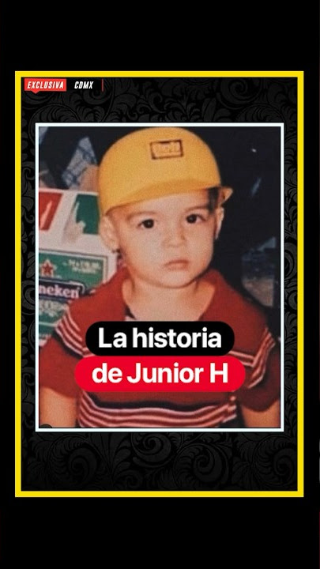

Junior H comenzó a interesarse por la música desde una edad temprana.
Durante sus primeros años aprendió a tocar instrumentos y comenzó a crear sus propias canciones.
Con el paso del tiempo, sus canciones comenzaron a llamar la atención de más personas y su carrera musical fue creciendo.